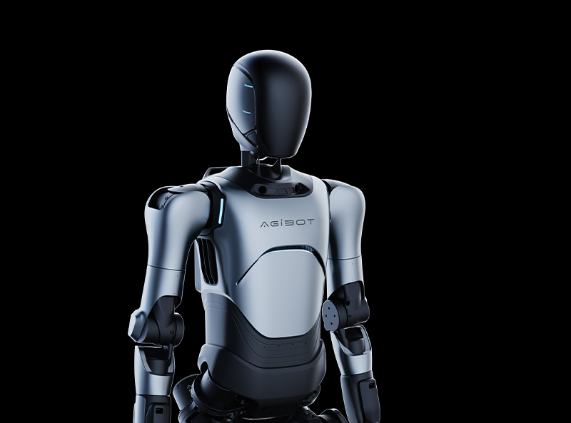

Who We Are
We are a team of visionaries who believe in the common goal of achieving immortality. We love life and believe in giving people the choice to live as long as possible.
Lucas Wang
At age 16, Lucas decided to make immortality his life goal after witnessing concerning signs of aging in himself due to years of constant academic stress. After obtaining a PhD in Medicine from Stanford University, Lucas began a decade-long journey of building Trueprint, acquiring funding from a group of anonymous investors and politicians. Since then, Trueprint has reached a market valuation of $80 billion, working in collaboration with research labs and experts around the world. To fully maximize his longevity, Lucas has since incubated himself in the newest version of the Vita-Pod and is embodied by a humanoid robot, Model 232.12 . He communicates with the outside world through a brain-computer interface.

Gabriel Espinoza
Gabe began prioritizing physical health in high school through training for athletics. As an avid weightlifter throughout his youth, Gabe began researching the optimal levels of exercise to promote long-term health. While working towards a PhD in biophysics at Stanford, Gabe conducted groundbreaking research into the specific mechanisms behind the physical deterioration of the human body. After cofounding Trueprint in 2013, Gabe oversees the development of cutting-edge technologies in every product, working with scientists around the world to do so. He specializes in developing humanoid robots, which are essential for guiding humans towards longevity and replacing humans' physical bodies when required. Gabe's belief in his products runs deep, often demonstrating an eagerness to be the first person to test them. Our newest robot prototype, Model B325, currently embodies him.
Kai Messerian
After receiving his marketing degree from Stanford Graduate School of Business, Kai began his career working as a marketing consultant for the now-successful corporation DoorDash. He then worked at a variety of startups, including Brex and Caper. Kai most recently served as a general partner at the venture capital firm Andreessen Horowitz before finally joining Trueprint in 2019. Since then, Kai has led multiple successful campaigns, ensuring Trueprint reaches as many people as possible. In alignment with the goals of Trueprint, Kai effectively conveys the ideas in the Live Forever Manifesto through his advertisements. Kai is a master of all trades, reaching a wide range of consumers through both digital and traditional marketing. Kai is currently embodied in the robot Model 593.3.
Dylan Gupta
Dylan exhibits a rare combination of technical prowess, intuition, communication, and leadership. While working for 10 years as a Vice President of Operations at Google DeepMind, Dylan played a crucial role in establishing Google Gemini amongst the top LLMs today. Dylan decided to join Trueprint after reaching philosophical enlightenment when reading the Live Forever Manifesto written by Lucas Wang. Embodied in Model 932.61,Dylan works tirelessly to coordinate the numerous departments of Trueprint's growing operation. Dylan incorporates Lucas's philosophy of maximizing life efficiency into the workplace, mathematically ensuring that every single bit of resource achieves its maximum utility. In his words, "Every single cent, picosecond, or calorie of human energy expenditure will fully contribute towards the goal of immortality under my watch."